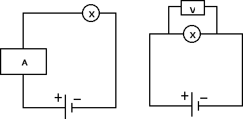

Corrente elettrica
Definizione di corrente
Nella precedente sezione abbiamo introdotto il concetto di carica elettrica e abbiamo visto come si possono accumulare cariche elettriche sulle armature dei condensatori. Da questa sezione invece cominceremo ad analizzare cosa succede quando mettiamo in movimento le cariche elettriche in un conduttore, come ad esempio in un metallo.
Nei metalli sono presenti uno o due elettroni per atomo nei livelli più esterni. Questi elettroni sono poco legati ai rispettivi atomi e pertanto sono dotati di una grande mobilità. Quando inseriamo un filo di materiale conduttore in un circuito elettrico, ossia quando colleghiamo il filo ai due capi di un generatore, ad esempio una pila, gli elettroni più esterni, carichi negativamente, si dirigono verso il polo positivo generando in questo modo una grande quantità di cariche in movimento: ha così origine una corrente elettrica.
In particolare, si definisce intensità di corrente elettrica i il rapporto tra la quantità di carica elettrica Q che passa attraverso una sezione unitaria del circuito, e l'intervallo di tempo Δt in cui questo passaggio avviene: i = Q / Δt. L'unità di misura della corrente nel Sistema Internazionale è l'ampere. Dal momento che la carica Q si misura in coulomb e il tempo in secondi avremo che 1 A = 1 C / 1 s.
Per convenzione il verso della corrente coincide con quello in cui si muovono le cariche positive, quindi dal polo positivo al polo negativo del generatore. Quindi il verso della corrente non coincide con il verso del moto degli elettroni. Se la corrente i in un circuito è costante nel tempo parleremo di corrente continua (in tal caso la corrente Q che attraversa una sezione del conduttore e l'intervallo di tempo Δt sono direttamente proporzionali), se invece la corrente elettrica varia nel tempo parleremo di corrente variabile.
Per misurare la corrente si usa uno strumento detto amperometro che va inserito in serie con l'utilizzatore X come nella figura di sinistra. Per misurare la differenza di potenziale presente tra due punti, ad esempio ai capi dell'utilizzatore X, dobbiamo usare uno strumento detto voltmetro e inserirlo in parallelo all'utilizzatore X come nella figura di destra:

In generale, il ruolo del generatore è quello di fornire la differenza di potenziale ΔV in grado di mantenere in moto le cariche elettriche all'interno del circuito elettrico fornendo loro l'energia necessaria. Ai capi di ogni utilizzatore ci ritroviamo poi parte di questa differenza di potenziale. Se ai capi di un utilizzatore c'è una differenza di potenziale ΔV, per far passare una carica elettrica q da un capo all'altro devo compiere un lavoro L = q · ΔV = i Δt ΔV. Pertanto la potenza assorbita da ogni utilizzatore è uguale a P = L / Δt = i · ΔV, ossia la potenza assorbita da un utilizzatore è il prodotto dell'intensità di corrente i che circola nell'utilizzatore per la differenza di potenziale ΔV ai capi dell'utilizzatore.
Poiché l'unità di misura della potenza nel Sistema Internazionale è il watt (W), possiamo definire un'unità di misura per l'energia elettrica alternativa al joule, vale a dire il kilowattora (kWh), molto utilizzato soprattutto per indicare i consumi di energia elettrica. 1 kWh è l'energia che viene assorbita da un utilizzatore di potenza 1 kW, tenuto acceso per un'ora. Dalla definizione stessa si ottiene facilmente che 1 kWh = 1000 W · 3600 s = 3.6 · 106 J. Ad esempio, un fon di potenza P = 1.6 kW che funziona per Δt = 10 min = 1/6 h, assorbe dalla rete E = P · Δt = 1.6 · 1/6 kWh = 0.27 kWh di energia elettrica. È chiaro che, per ridurre i consumi di energia elettrica, non possiamo che ridurre o la potenza P degli utilizzatori oppure il tempo Δt in cui essi vengono mantenuti in funzione.